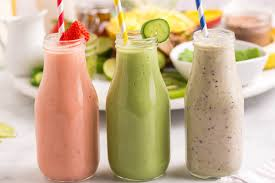

Nuestro Menú
Café Latte
Suave, cremoso y preparado con granos seleccionados.

Postres Caseros
El toque dulce perfecto para acompañar tu café.

Smoothies Naturales
Refrescantes, saludables y 100% frutas naturales.